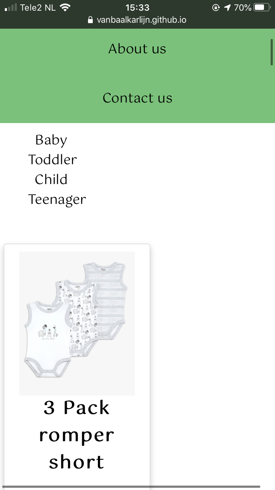

Our website is clear with a easy design, with not too much fuss and mishmash, because we want people to be who they are, and they don't have to do their best to stand out. We have to love people for who they are, and not for who they are trying to be. Everyone is perfect in their own, simple way, without glitter and gold. That is the reason why we kept our website as minimalistic as possible.
The navigation and structure of content

On our navigation bar, we have 4 catogories; Home, Catalogue, About Us and Contact Us. On the Home/landing page, you will find our story, and we will also include a appropriate photo for our website. The catalogue button is divided in 4 sub catagories; Baby, Toddler, Child and Teenager. On there, you will find the corresponding clothing for that specific age catagorie. On the About Us, we have 2 sub catagories; Meet the Team and Xmovement. At the page of Xmovement, you will find our ‘about us’, ‘our values’, ‘our mission’ and ‘our vision’. The last catagorie Contact Us consists of a fill in bar, where the customer can get in contact with us. We also create a bottom navigation bar, with the catogories FAQ and Design Choises.
Home
when clicking on this page, you will go directly to the home page. On this page, there will be a carousel with pictures of people wearing our gender-neutral clothing, so the customer can see immediately how it fits and what offer we have. On the right, we have a text with our story. Here, we will explain quickly who we are, where we stand for, a short instruction for our website and other helpful information that the customer needs to know before shopping. We made this text in a yellow box, to stand out and catch the attention.
Catalog
This is the page where our website will be founded. There is an option with ‘show all’, but you can also categorize based on the items (shoes, shirts, basics, etc.). There will be boxes for the items with a picture, item name, price and sizes. In this way, the customer can scroll through the catalog and read the most important thing about the item, without having to click on it. You can click on the item, to read more important information, such as washing instructions and fabric material, but you can also put it in your cart immediately.
About us
When you hang your cursor on the ‘about us’, the options ‘meet the team and our values’ will be visible, which you can click on and this will lead you to these pages. On the ‘about us’ page, we will discuss our brand, how we started, were we are now and what we want in the future.
Meet the team
On this page, we will introduce ourselves, with pictures of each of us. It is really important for the customer to get to know us, because in this way we can create a small relationship and reliability with the customer. For the text, we made boxes in different colours (based on our colour palette), for each person. We used all colours to make this page a bit playful, because here we will tell fun stories and not so serious topics about ourselves.
Contact us
On this page, the customer can get in contact with us. The first and last name, email, country and subject is needed for this. In this way, we can easily email the customer back with out respond.
FAQ
We also created a frequently asked questions page, where all the most asked questions will be discussed and explained. The questions will be underneath each other, and when clicking on the question, a big, pink box with the answer will appear. This page can be found at the bottom on the page. This is important, because when the customer has a question, the customer can first look in the FAQ page, before having to ask the question him/herself. This will save a lot of time and inconvenience.
Wireframes of the landing page and at least one other pages
A close up of a logo

Description automatically generated
A screenshot of a cell phone

Description automatically generated
The colours from our colour palette are: #E873A5, #7CC17B, #0E0F0F, #3EA3E9, and #F2E58E. The pink and the blue colours are based on the gender-neutral flag, which is applicable for our brand vision. We are also using green and yellow colours, because these are also gender neutral colours. Also, we have a black shade, because this is a neutral colour and easy to work with. All the colours (except from the black) are pastel/soft colours, because we are a calm and friendly brand and don’t want to overwhelm people.
Choice of fonts from Google Fonts
The font we are using is Gotu. This font is a little bit childish, playful, not straight and not perfect, and that is exactly where we stand for: having freedom and be whoever you are, you don’t have to be perfect. Also, this is a font which you don’t see often, and with this we want to build brand recognition and awareness.
User Testing
To find out if our website and our product/service would meet the needs of the customers, we set up a survey for our target audience. Firstly, we wanted to get to know our audience, and asked them some introducing questions. Later on, they had to answer questions about the social aspects of clothing. For example, do they ever receive nasty comments about their clothing and does our target audience ever let their children choose their own clothes? The social aspect is a very important matter in our brand.
After the first survey was filled in by our target audience, we gave them a second survey to look at. This one was about solutions we had for our previous problems. The majority questions were about unisex clothes. This would solve the social aspect such as nasty comments about one’s clothing style.
Based on the results, we found out what kind of clothes would be a good fit for our webshop.
After all our questions, the participants found a prototype attached to the survey.
The participants were able to see an overview of the web shop when they would click on it. The first thing they would see, was a page of clothing samples. On the left there are some filters to choose from, as on the right is some more text.
Our target audience was able to send in some feedback.
The thing they liked about the prototype, was that it looked very recognizable from other web shops. It is easy to understand. We also received some tips. On the contrary, it looked very simply and standard. It was nothing unique, although it would be a challenge to make it user friendly when you come up with something original yet unfamiliar.
As conclusion to the answers of the target audience that gave comments about our prototype website, we can come up with some improvement for our website.
To start with the want to see a contact page and/or FAQ page. Further what was mentioned a lot was a sorting button, this could also be in the sense of ‘’others also bought this’’ or ‘’special selection for you’’. Lastly what was mentioned a lot and is really useful for our website, is the option to subscribe to the newsletter.
All these tips will be updated in our website design and taking into consideration with the further development of our brand and website that’s part of it.